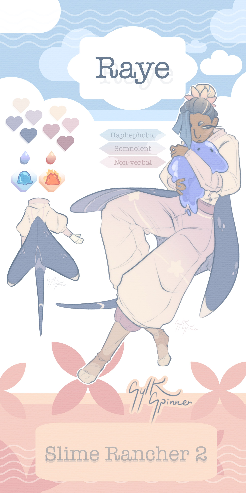
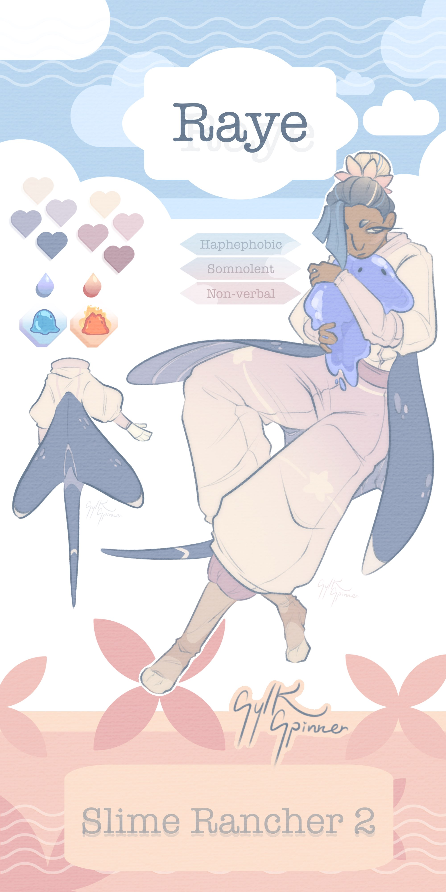
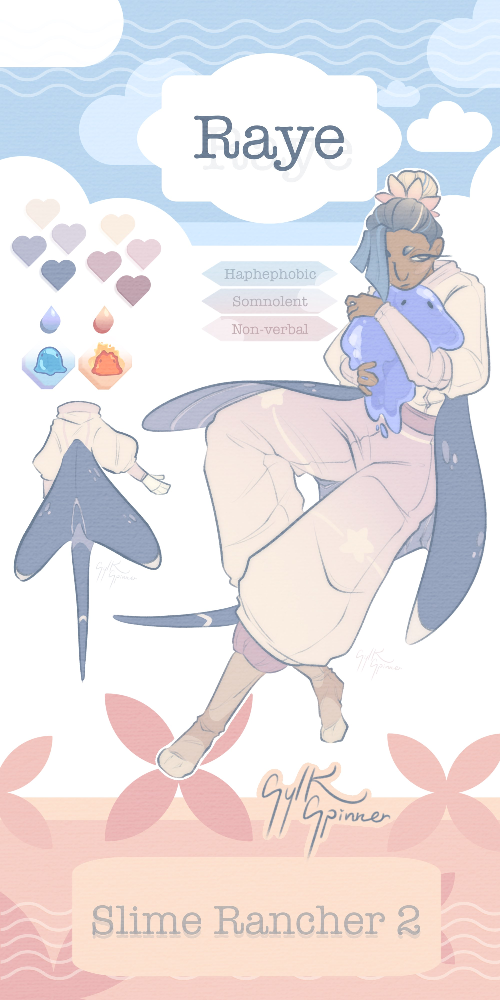

Character-based Designs:
Here are some character designs I have made as well as art of other's characters!
Character Sheets

 

Character Art


Here are some character designs I have made as well as art of other's characters!
